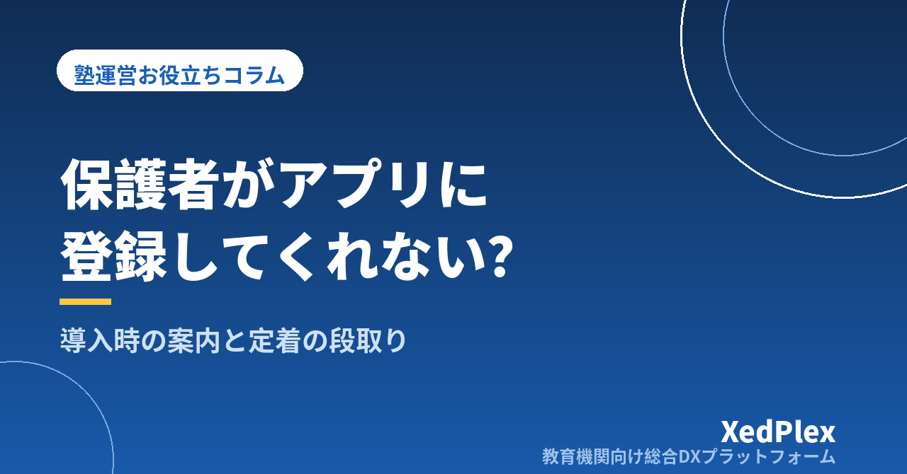

塾の保護者向けアプリ、登録してくれない・見てくれないときは？｜導入時の案内と定着までの段取りを型にする

連絡の手間を減らそうと、保護者向けの連絡アプリや管理システムを入れた。案内のプリントも配った。ところが2週間たっても登録したのは半分ほど。残りの家庭には結局、これまでどおり個人LINEや紙で連絡していて、むしろ「二重管理」で手間が増えてしまった──。個人塾・小規模塾の塾長から、こうした声をよく聞きます。
保護者が登録しないのは、ツールが悪いからでも、保護者の協力が足りないからでもないことがほとんどです。多くは「登録する理由」と「登録する機会」が用意されていないことが原因です。この記事では、登録が進まない理由を整理したうえで、案内の仕方、登録の機会のつくり方、未登録の家庭へのフォロー、そして旧手段からの切り替えまでを、塾長ひとりでも回せる段取りとしてまとめます。
保護者が登録しない・見ない、よくある4つの理由
まずは「なぜ進まないのか」を分けて考えます。理由ごとに打ち手が違うからです。
| 理由 | 保護者の頭の中 | 主な打ち手 |
|---|---|---|
| ①登録する理由がない | 「今のLINEで困っていないのに、なぜ？」 | 保護者にとっての利点を一文で伝える |
| ②手順が面倒・分からない | 「あとでやろう」→そのまま忘れる | 手順を3ステップに絞り、その場で登録できる機会をつくる |
| ③届いても気づかない | 「通知が多くて埋もれている」 | 通知の受け取り方を一緒に設定し、送る内容と曜日を固定する |
| ④旧手段が残っている | 「どうせLINEでも連絡が来る」 | 切り替え日を決め、旧手段での連絡を段階的にやめる |
導入直後に多いのは①と②、導入から数か月たって「見てくれない」と感じるときは③と④が効いていることが多いです。今どの段階でつまずいているかを確認してから、次の段取りに進みましょう。そもそもどんな機能を持つツールを選ぶべきかは保護者連絡アプリに必要な機能で整理しています。
案内の段取り：「何が便利になるか」を先に伝える
案内文は「保護者の利点」から書き始める
案内のプリントが「このたび、当塾では〇〇システムを導入いたしました」から始まっていると、保護者には塾側の都合に見えてしまいます。冒頭には、保護者が受け取れる具体的な利点を書きましょう。たとえば「お子さまが塾に着いたとき・帰るときにLINEかメールでお知らせが届きます」「欠席の連絡がスマホから24時間できます」のように、日々の場面が浮かぶ書き方にします。
【例：導入案内の冒頭】
12月から、お子さまの塾への到着・下校のお知らせが、スマートフォンに自動で届くようになります。欠席のご連絡や塾からのお知らせも、すべてここで確認できます。
登録は約3分です。12月10日（木）までにお願いします。
登録の方法が分からない場合は、お迎えの際に教室でお手伝いします。
ポイントは3つです。利点を最初に書く、所要時間と締切を太字で示す、そして「できなければ手伝う」と書いておくこと。最後の一文があるだけで、スマホ操作に自信のない保護者の心理的な壁がぐっと下がります。
手順は3ステップ・画面付き・1枚にまとめる
登録手順の説明は、文字だけで長く書くほど読まれません。「①QRコードを読み取る ②名前と生徒番号を入れる ③通知を受け取る方法を選ぶ」のように3ステップ程度に絞り、実際の画面の写真を添えて1枚にまとめます。家庭ごとに必要な情報（招待コードや生徒番号など）は手書きや差し込みで記入して渡すと、入力ミスによる問い合わせが減ります。
登録の「機会」をつくる：配って待つのをやめる
案内を配って締切まで待つだけでは、登録率は伸び悩みがちです。忙しい保護者にとって「あとでやる」は、たいてい「やらない」になります。そこで、塾の側から登録する機会を用意します。
| 機会 | やり方 | 向いている家庭 |
|---|---|---|
| お迎え時の声かけ | 送迎の時間に「今3分だけよろしいですか」と声をかけ、その場で一緒に登録する | 送迎がある家庭、スマホ操作が不安な家庭 |
| 入塾手続き・面談の場 | 申込書の記入や面談の最後に登録を組み込む | 新入塾生、面談予定のある家庭 |
| 保護者会・説明会 | 会の最後に5分の「登録タイム」を設ける | まとめて案内したいとき |
| 電話での個別サポート | 未登録の家庭に電話し、画面を見ながら手順を案内する | 来塾の機会が少ない家庭 |
特に効果が大きいのは、入塾手続きに組み込んでしまうことです。新しく入る家庭は最初から登録済みの状態にしておけば、未登録者は増えません。保護者会の開き方や入塾後1か月のフォローの流れに、登録の確認を1行足しておきましょう。
未登録の家庭へのフォローと「見てもらう」工夫
登録状況を名簿で管理し、3段階で追いかける
締切を過ぎても全員がそろうことはまずありません。大切なのは、誰が未登録かを名簿で把握し、段階を決めて追いかけることです。
- 締切の翌週：未登録の家庭だけに、案内プリントを再配布（「まだの方へ」と一言添える）
- その翌週：生徒本人に「おうちの人に渡してね」と手渡しし、お迎え時に声をかける
- それでも未登録：電話で事情を聞く。スマホを持っていない、メールしか使っていない、日本語の文章が負担になっている、など理由が分かれば、別の手段を用意する
3つ目で分かる「登録できない事情」は、無理に解消しようとしないことも大切です。メールでの受け取りを選べるようにする、紙の配布を一部残す、多言語の案内を用意するなど、家庭に合わせた受け取り方を決めて名簿に記録しておきます。外国籍の保護者への備えは外国籍の生徒・保護者への対応も参考にしてください。
「見てくれない」は、送る側の設計で減らせる
登録は済んだのに読まれていないと感じるときは、送る内容と頻度を見直します。一斉配信が多すぎる、用件が1通に詰め込まれている、毎回違う時間に届く、といった状態だと、通知は埋もれてしまいます。
- 自動で届く入退室のお知らせなど「読まなくても困らない通知」と、締切のあるお知らせを区別する
- 一斉のお知らせは送る曜日・時間帯を固定し、1通1用件にする
- 締切があるものは件名や1行目に日付を書く
- 月に一度は「わが子の話」が入った短い報告を送り、開く理由をつくる
連絡の頻度と内容の設計は保護者連絡の適切な頻度で詳しく解説しています。「開けば必ずわが子の情報がある」状態になれば、保護者は自分から見に来るようになります。
旧手段からの切り替え：二重管理を終わらせる
最後の壁が、個人LINEや紙との「併用」です。新しいツールを入れても、塾長が旧手段でも同じ連絡を続けている限り、保護者には切り替える理由がありません。結果として塾長の手間だけが倍になります。
そこで、切り替え日を決めて予告し、段階的に旧手段をやめるのが現実的です。
| 時期 | やること |
|---|---|
| 導入〜1か月目 | 新ツールと旧手段を併用。旧手段で送るときも「同じ内容を〇〇にも送っています」と添える |
| 2か月目 | 「〇月〇日から、お知らせは〇〇のみでお送りします」と予告。未登録家庭へのフォローを集中して行う |
| 切り替え日以降 | 一斉のお知らせは新ツールのみ。個別事情のある家庭だけ、決めた代替手段で送る |
講師の個人LINEで保護者とやり取りしている場合は、切り替えと同時にやめるルールにしておくと、記録が残らない連絡や時間外の対応も減らせます。理由や考え方は講師の個人LINE頼みの危険性と時間外の連絡ルールにまとめています。
- 案内文の冒頭に「保護者の利点」が書いてあるか
- 登録手順は3ステップ程度・画面付きで1枚になっているか
- お迎え時や面談など、その場で登録できる機会を決めたか
- 名簿に登録状況と受け取り方法の欄をつくったか
- 旧手段をやめる「切り替え日」を決めて予告したか
まとめ
保護者がアプリに登録してくれない・見てくれないのは、多くの場合、登録する理由・登録する機会・見に行く理由のどれかが足りていないためです。案内は保護者の利点から書き、手順は3ステップに絞り、お迎えや入塾手続きなど「その場で登録できる機会」を用意する。未登録の家庭は名簿で追いかけ、事情のある家庭には別の受け取り方を決める。そして切り替え日を決めて旧手段をやめる。この順番で進めれば、二重管理の期間を短くできます。ツール選びや導入の全体像は塾DXは何から始める？と情報の一元化の進め方もあわせてご覧ください。
この記事を書いた運営より
私たちは、個人経営・小規模の学習塾向けに、生徒管理・QRコードでの入退室記録・月次請求・保護者へのLINE/メール通知・AIによる学習支援までをひとつにまとめた教育機関向け総合DXプラットフォーム「XedPlex（ゼドプレックス）」を開発・提供しています。初期費用は0円、料金は生徒1名あたり月額300円（税込）から。生徒50名の塾なら月15,000円（税込）です。全国8つの教室で導入されており、導入塾には紹介ホームページの無料作成も行っています。機能の詳細説明はこちら。
XedPlexの詳細を見る